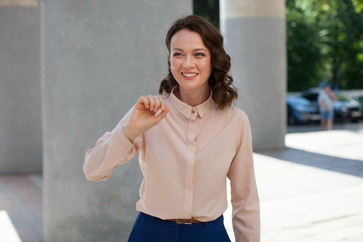

Ольга Олексий Ивановна
Родилась 17 сентября 1980 года.
Ольга Ивановна Олексий — российско-украинская актриса, которая с завидной регулярностью мелькает
на телеэкранах, а также успешно играет в театре.
Благодаря красоте, таланту и трудолюбию ей удалось практически с первых киноработ завоевать
любовь и внимание публики.
Сегодня за творчеством артистки следят десятки тысяч зрителей, с нетерпением ждущих премьеры с
ее участием.
Ольга родилась в столице Украины 17 сентября 1980 года в семье геодезистов. Примечательно, что в
юном возрасте она была очень далека от творческой профессии.

Родители даже не могли предположить, что будущее их дочери будет связано со сценой или
кинематографом.
Оля росла застенчивой, тихой и чрезвычайно робкой. Она училась в музыкальной школе и
демонстрировала немалые успехи. Но вот отчетные концерты, которые дважды в год проходили на
сцене, каждый раз были страшным испытанием для нее.
Девочка настолько боялась выхода на публику, что ее руки начинали предательски дрожать. В
результате играть она не могла. Выбор актерского искусства для Олексий — это своего рода работа по преодолению своих комплексов
и страхов.
У Ольги были все необходимые качества, чтобы добиться успеха на этом поприще: запоминающаяся
внешность, отличный слух и хорошая пластика. Ведь в юности, кроме музыкальной школы, она
посещала хореографический кружок.
Одно время Ольга подумывала о поступлении в Харьковский авиационный институт, но вестибулярный
аппарат оказался у нее не таким выносливым, как это было необходимо. Поэтому абитуриентка
отправилась в Киевский университет театра кино и телевидения имени И. К. Карпенко-Карого.
Девушка решила, что ей нужно побороть себя и доказать всем, что она может обуздать свой страх и преодолеть робость.